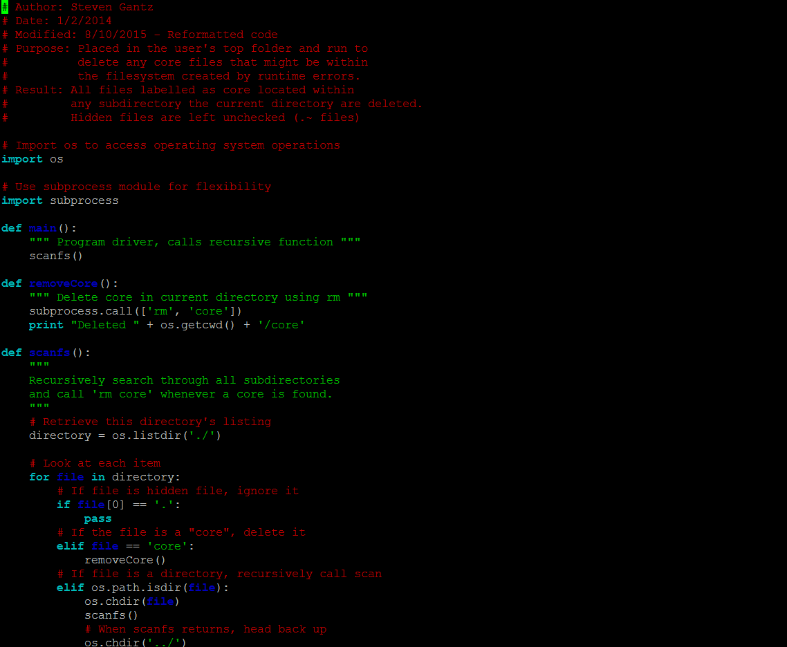

Project Description
RemoveCore is a simple program that I wrote and used consistently
while learning how to program C++. It is a short python script that
traverses through lower directory structures searching for files named
core.
These files are generated from a segmentation fault during a c++
program execution while using a Unix-based operating system.
These cores are large files and pop up often when learning about
memory management in C++ and dynamic memory allocation using malloc
in C.
This script can be set to run using a cronjob by a student that will periodically
wipe out any hidden core files throughout their entire directory structure.